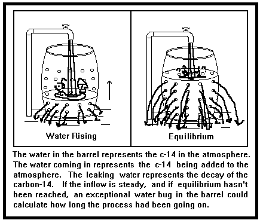

¿Qué tan buenos son esos argumentos de la Tierra joven?
Un examen detallado de la lista de argumentos de la Tierra joven del Dr. Hovind y otras afirmaciones
por Dave E. Matson| Copyright © 1994-2002 |

Anterior |
Contenido |
Siguiente |
El siguiente material ha sido tomado de una hoja titulada Varios supuestos erróneos se utilizan en todos los métodos de datación radiométrica. El Carbono 14 se utiliza para este ejemplo:, que fue publicado por el Dr. Hovind.
Dr. Hovind (R1): El atmosférico C-14 está actualmente solo a 1/3 del camino hacia un valor de equilibrio que se alcanzará en 30.000 años. Esto invalida el método del carbono-14 así como demuestra que la Tierra tiene menos de 10.000 años de antigüedad.
R1. Lo anterior se ofrece como un hecho simple de la investigación. Sabiendo cuán erróneas pueden ser las "hechos" creacionistas, hagamos un poco de investigación por nuestra cuenta. Uno sospecha que el mundo científico no estaría utilizando el método del carbono-14 si fuera tan obviamente defectuoso. ¿Podría ser que toda la comunidad científica haya pasado por alto este punto, o es otro caso de divagación creacionista?
Este argumento fue popularizado por Henry Morris (1974, p.164), quien utilizó algunos cálculos realizados en 1968 por Melvin Cook para obtener la cifra de 10.000 años. En 1968, otro creacionista, Robert L. Whitelaw, utilizando una mayor proporción de producción de carbono-14 en relación con su desintegración, concluyó que solo habían transcurrido 5.000 años desde que el carbono-14 comenzó a formarse en la atmósfera.
El argumento puede compararse con llenar un barril que tiene numerosos pequeños agujeros en sus paredes. Introducimos la manguera de jardín y la encendemos a máxima potencia. El agua que sale de la manguera es análoga a la producción continua de átomos de carbono-14 en la atmósfera superior. El barril representa la atmósfera de la Tierra en la que se acumula el carbono-14. El agua que se filtra por los lados del barril representa la pérdida (principalmente por desintegración radiactiva) del suministro de carbono-14 de la atmósfera. Ahora, cuanto más lleno esté el barril, más agua se filtrará por los lados completamente perforados, tal como más carbono-14 se desintegrará si hay más de él presente. Finalmente, cuando el agua alcanza un cierto nivel en el barril, la cantidad de agua que entra en el barril es igual a la cantidad que se filtra por los lados perforados. Decimos que la entrada y salida de agua están en equilibrio. El nivel de agua simplemente se mantiene allí, aunque la manguera esté funcionando a máxima potencia. (El barril está hecho lo suficientemente profundo para que no tengamos que preocuparnos por que el agua desborde el borde.)
Henry Morris argumentó que si comenzáramos a llenar nuestro barril vacío, tardaríamos 30.000 años en alcanzar el punto de equilibrio. Por lo tanto, concluyó, si nuestra Tierra fuera más antigua que 30.000 años, el
el agua entrante debería ser igual al agua que se filtra hacia afuera. Es decir, el punto de equilibrio debería haberse alcanzado hace mucho tiempo dado la tasa actual de producción de carbono-14 y la edad avanzada de la Tierra. El siguiente paso en el argumento de Henry Morris fue demostrar que el nivel de agua en nuestra analogía del barril no estaba en equilibrio, que considerablemente más agua entraba que se filtraba hacia afuera. Con ese fin, él citó a algunas autoridades, incluyendo a Richard Lingenfelter. Habiendo logrado eso, Morris concluyó que el barril aún estaba en el proceso de llenarse y que, dada la tasa actual de agua que entra y se filtra hacia afuera, el proceso de llenado comenzó hace solo 10,000 años.
Es un gran argumento, excepto por una pequeña cosa. El agua no sale de la manguera a un ritmo constante como asumía nuestro modelo. A veces se ralentiza hasta convertirse en un goteo, de modo que mucha más agua se filtra del barril de la que entra; a veces va a toda velocidad, de modo que entra mucha más agua al barril de la que se filtra. Por lo tanto, el simple hecho de que la tasa actual de agua que entra exceda la del agua que se filtra no puede extrapolarse hacia un tiempo inicial. Y eso destruye todo el argumento. (Véase la Figura 1).
 |
El artículo de Lingenfelter fue escrito en 1963, antes de que los ciclos de variación de C-14 que describimos hubieran sido plenamente documentados. El punto es que las fluctuaciones en la tasa de producción de C-14 significan que en algunos momentos la tasa de producción superará la tasa de desintegración, mientras que en otros momentos la tasa de desintegración será la mayor.
(Strahler, 1987, p.158)
Lingenfelter atribuyó en realidad la discrepancia entre las tasas de producción y decaimiento a posibles variaciones en el campo magnético de la Tierra, una conclusión que habría arruinado el argumento de Morris. Henry Morris optó por no mencionar esa parte del documento. ¡Los creacionistas no quieren que sus lectores se distraigan con problemas de ese tipo —a menos que el gato ya haya salido de la bolsa y algo tenga que decirse!
La datación por anillos de árbol (véase Tema 27) nos proporciona una excelente verificación del método de datación por radiocarbono para los últimos 8000 años. Es decir, podemos utilizar la datación por carbono-14 en un anillo de árbol específico (la secuencia de 8000 años habiendo sido ensamblada a partir de los patrones superpuestos de anillos de árboles de árboles vivos y muertos) y comparar la edad resultante con la fecha por anillos de árbol. Un estudio de las desviaciones de la secuencia precisa de datación por anillos de árbol muestra que el campo magnético de la tierra tiene un efecto importante en la producción de carbono-14. Cuando el momento dipolar es fuerte, la producción de carbono-14 se suprime por debajo de lo normal; cuando es débil, la producción de carbono-14 se incrementa por encima de lo normal. Lo que hace el campo magnético es proteger parcialmente la tierra de los rayos cósmicos que producen carbono-14 en la alta atmósfera.
Contrario a las afirmaciones totalmente desacreditadas del creacionista Barnes, que he cubierto en Tema 11, el campo magnético de la Tierra (momento dipolar) ha aumentado y disminuido a lo largo del tiempo. Strahler presenta un gráfico del momento dipolar de la Tierra que se remonta a 9000 años.
La Figura 19.5, curva C, muestra la intensidad del campo dipolar calculada a partir de mediciones del magnetismo de flujos de lava y de artefactos como cerámica y ladrillos, cuya edad puede ser determinada. La curva se ajusta aproximadamente a los valores medios determinados cada 500 a 1.000 años... La curva está aproximadamente 180 grados fuera de fase con la curva de C-14.
(Strahler, 1987, p.156)
La idea [de que el campo magnético fluctuante afecta la entrada de rayos cósmicos, lo que a su vez afecta las tasas de formación de C-14] ha sido retomada por el geofísico checo, V. Bucha, quien ha sido capaz de determinar, utilizando muestras de arcilla cocida de sitios arqueológicos, cuál era la intensidad del campo magnético de la tierra en el momento en cuestión. Incluso antes de que estuvieran disponibles los datos de calibración de anillos de árboles, él y el arqueólogo, Evzen Neustupny, fueron capaces de sugerir cuánto afectaría esto a las fechas de radiocarbono. (Renfrew, p.76)
(Weber, 1982, p.27)
Por lo tanto, al menos en los últimos 9000 años, el campo magnético de la Tierra ha fluctuado y esas fluctuaciones han inducido fluctuaciones en la producción de carbono-14 en una medida notable. Por consiguiente, como ya se ha señalado, la afirmación del Dr. Hovind de que el carbono-14 ha estado aumentando lentamente hacia un equilibrio de 30.000 años es sin valor. Ahora tienes la razón técnica para el fracaso del modelo de Morris.
Podría interesar al lector saber que dentro de este período de 9000 años, donde el método de radiocarbono puede verificarse mediante datos de anillos de árboles, los objetos más antiguos que 400 aC reciben una datación de carbono-14 que los hace aparecer más jóvenes de lo que realmente son. Una datación de carbono-14 sin corregir de 6000 años para un objeto significaría en realidad que el objeto tenía 6700 años. Setecientos años aproximadamente es la distancia promedio a la que se desvía el método de carbono-14 de la datación por anillos de árboles. Las fechas individuales dadas en un gráfico de correlación de 1973 (Bailey, 1989, p.100) muestran que los objetos con edades verdaderas entre 4200 aC y 5400 aC recibirían una datación de carbono-14 que los haría aparecer entre 500 y 900 años más jóvenes. Como resulta ser, tenemos una verificación de la producción de carbono-14 que se remonta incluso más allá de los 8000 años:
La evidencia del historial pasado de la concentración de C-14 en la atmósfera ahora está disponible durante los últimos 22.000 años, utilizando las edades de los sedimentos lacustres en los que se preservan compuestos de carbono orgánico. Informando en una conferencia de 1976 sobre climas pasados, el Profesor Minze Stuiver de la Universidad de Washington encontró que las edades magnéticas de los sedimentos lacustres permanecieron dentro de 500 años de las edades de carbono radiactivo durante todo el período. Informó que la concentración de C-14 en la atmósfera durante ese largo intervalo no varió más del 10 por ciento (Stuiver, 1976, p. 835).
Por lo tanto, la evidencia disponible es suficiente para validar el método de carbono radiactivo de determinación de edad con un error de aproximadamente 10 por ciento para un período dos veces más largo del que exige el escenario creacionista.
(Strahler, 1987, p.157)
Sí, el contenido atmosférico de carbono-14 puede variar algo. El momento dipolar del campo magnético de la Tierra, la actividad de las manchas solares, el efecto Suess, posibles explosiones de supernovas cercanas e incluso la absorción oceánica pueden tener algún efecto en la concentración de carbono-14. Sin embargo, estos factores no afectan las fechas de radiocarbono en más de aproximadamente un 10-15 por ciento, según los estudios anteriores. Por supuesto, cuando llegamos al límite superior del método, alrededor de 40.000 años para las técnicas estándar, debemos permitir una incertidumbre mucho mayor, ya que las pequeñas cantidades de C-14 restantes son mucho más difíciles de medir.
Los datos de los anillos de los árboles nos proporcionan una tabla de corrección precisa para las fechas de carbono-14 tan atrás como hace 8.000-9.000 años. El estudio anterior de Stuiver muestra que las fluctuaciones del C-14 en la atmósfera fueron bastante razonables tan atrás como hace 22.000 años. El campo magnético de la Tierra parece tener el mayor efecto en la producción de C-14, y no hay razón para creer que su intensidad fuera muy diferente incluso hace 40.000 años. (Para una refutación del argumento de Barnes, véase Tema 11.)
Por lo tanto, la variación atmosférica en la producción de C-14 no es un problema grave para el método del carbono-14. La evidencia refuta la afirmación creacionista del Dr. Hovind de que el contenido de C-14 de nuestra atmósfera se encuentra en medio de un acumulado de 30.000 años. Por consiguiente, podemos descartar este argumento de creacionismo de la Tierra joven.
Dr. Hovind (R2): La tasa de desintegración del C-14 no es constante. Varios factores, incluido el ciclo de 11 años de las manchas solares, afectan su tasa de desintegración.
R2. Es dolorosamente obvio que el Dr. Hovind sabe casi nada sobre la datación radiométrica de carbono-14! Los cambios en el ciclo de las manchas solares sí tienen un efecto notable a corto plazo en la tasa de producción de C-14, ya que las manchas solares están asociadas con erupciones solares, que generan tormentas magnéticas en la Tierra, y el estado del campo magnético de la Tierra afecta efectivamente el número de rayos cósmicos que llegan a la atmósfera superior de la Tierra. (El carbono-14 se produce por colisiones energéticas entre rayos cósmicos y moléculas de nitrógeno en la atmósfera superior.) Las manchas solares tienen absolutamente nada que ver con la tasa de desintegración del C-14, que define el periodo de semidesintegración de ese elemento radiactivo. El Dr. Hovind ha confundido dos conceptos completamente diferentes.
La mecánica cuántica, ese sólido pilar de la física moderna, que ha sido verificada de tantas maneras diferentes que no podría empezar a enumerarlas todas incluso si las tuviera a mano, no nos da ninguna razón teórica para creer que la tasa de desintegración del C-14 ha cambiado o puede ser afectada significativamente por cualquier proceso razonable. También tenemos observación directa:
El hecho de que las edades radiocarbónicas coincidan tan estrechamente con los conteos de anillos de árbol durante al menos 8000 años, cuando se tiene en cuenta el efecto magnético observado sobre la tasa de producción de C-14, sugiere que la constante de desintegración en sí misma puede considerarse confiable.
(Strahler, 1987, p.157)
Dado que 8000 años es casi dos vidas medias para el carbono-14, siendo su vida media de 5730 años (más o menos 40 años), tenemos excelentes pruebas observacionales de que la tasa de desintegración es constante. También contamos con estudios de laboratorio que respaldan la constancia de todas las tasas de desintegración utilizadas en la datación radiométrica.
Se han realizado muchos experimentos en intentos de cambiar las tasas de desintegración radiactiva, pero estos experimentos han fallado consistentemente en producir cualquier cambio significativo. Se ha encontrado, por ejemplo, que las constantes de desintegración son las mismas a una temperatura de 2000 grados C o a una temperatura de -186 grados C y son las mismas en el vacío o bajo una presión de varias miles de atmósferas. Las mediciones de las tasas de desintegración bajo campos gravitacionales y magnéticos diferentes también han arrojado resultados negativos. Aunque los cambios en las tasas de desintegración alfa y beta son teóricamente posibles, la teoría también predice que tales cambios serían muy pequeños [Emery, 1972] y, por lo tanto, no afectarían los métodos de datación. Bajo ciertas condiciones ambientales, las características de desintegración del C-14, Co-60 y Ce-137, todos los cuales se desintegran mediante emisión beta, se desvían ligeramente de la distribución aleatoria ideal predicha por la teoría actual [Anderson, 1972; Anderson & Spangler, 1973], pero no se han detectado cambios en las constantes de desintegración.
Existe un cuarto tipo de desintegración que puede verse afectado por condiciones físicas y químicas, aunque solo muy ligeramente. Este tipo de desintegración es la captura electrónica (e.c. o captura K), en la que un electrón orbital es capturado por el núcleo y un protón se convierte en un neutrón. Dado que este tipo de desintegración implica una partícula fuera del núcleo, la tasa de desintegración puede verse afectada por variaciones en la densidad de electrones cerca del núcleo del átomo. Por ejemplo, la constante de desintegración del Be-7 en diferentes compuestos químicos de berilio varía hasta en un 0,18 por ciento [Emery, 1972, 64]. El único isótopo de interés geológico que experimenta desintegración por captura electrónica es el K-40, que es el isótopo padre en el método K-Ar. Las mediciones de la tasa de desintegración del K-40 en diferentes sustancias bajo diversas condiciones indican que las variaciones en el entorno químico y físico no tienen un efecto detectable en su constante de desintegración por captura electrónica.
(Dalrymple, 1984, p.88)
Creanlo o no, una serie de ataques creacionistas contra las tasas de desintegración radiométrica se dirigen a un tipo de "desintegración" llamado conversión interna (CI), que tiene absolutamente nada que ver con los métodos de datación radiométrica (Dalrymple, 1984, p.88). Harold Slusher, un miembro destacado del Instituto de Investigación del Creacionismo, afirmó que "Los experimentos han demostrado que las tasas de desintegración del cesio 133 y el hierro 57 varían, por lo que puede haber variaciones similares en otras tasas de desintegración radiactiva." (Slusher, 1981, p.22, 49; de Brush)
Estos son ambos isótopos estables, por lo que no hay una tasa de desintegración que pueda ser alterada. Esta afirmación simplemente revela la ignorancia de Slusher sobre la física nuclear. (La desintegración gamma de un estado excitado del hierro 57 ha sido estudiada, pero esto no tiene nada que ver con los tipos de desintegraciones utilizadas en la datación radiométrica.)
(Brush, 1982, p.52)
DeYoung [1976] enumera 20 isótopos cuyas tasas de desintegración han sido alteradas por condiciones ambientales, aludiendo a la posible significación de estos cambios para la geocronología, pero los únicos cambios significativos son para isótopos que se "desintegran" mediante conversión interna. Estos cambios son irrelevantes para los métodos de datación radiométrica.
(Dalrymple, 1984, p.88)
Manténganse atentos a esos creacionistas! Cambiarán de tema más rápido de lo que puede decir "tiddlywinks". Un momento están hablando sobre la desintegración radiactiva de los núclidos involucrados en la geocronología, y al siguiente momento, están repartiendo ejemplos de desintegración de IC en isótopos estables. Morris (1974) afirmó que los neutrones libres podrían cambiar las tasas de desintegración. Sin embargo, Henry Morris, ese ícono del creacionismo, solo demostró que no sabía más sobre la datación radiométrica que el Dr. Hovind hoy en día. "...[los argumentos de] Morris muestran que no entiende ni las reacciones de neutrones ni la desintegración radiactiva." (Dalrymple, 1984, pp.88-89). Los neutrones libres podrían cambiar un elemento en otro, pero las tasas de desintegración permanecen fieles a sus elementos.
Otro intento de Morris invoca neutrinos.
Morris [1974] también sugiere que los neutrinos podrían cambiar las tasas de desintegración, citando un artículo de Jueneman (72) en Industrial Research. El subtítulo de las columnas de Jueneman, que aparecen regularmente, es, apropiadamente, "Especulación Científica". Especula que los neutrinos liberados en una explosión de supernova podrían haber "reiniciado" todos los relojes radiométricos. Jueneman describe una hipótesis altamente especulativa que explicaría la desintegración radiactiva mediante la interacción con neutrinos en lugar de la desintegración espontánea, y señala que un evento que aumentara temporalmente el flujo de neutrinos podría "reiniciar" los relojes. Sin embargo, Jueneman no propone que las tasas de desintegración cambiarían, ni indica cómo se reiniciarían los relojes; además, no hay evidencia que respalde su especulación.
(Dalrymple, 1984, p.89)
Hubo también un intento por parte de Slusher y Rybka de invocar neutrinos. ¡Esos misteriosos neutrinos parecen ser un tema candente!
Slusher (117) y Rybka (110) también proponen que los neutrinos pueden cambiar las tasas de desintegración, citando una hipótesis de Dudley (40) de que la desintegración es desencadenada por neutrinos en un "mar de neutrinos" y que los cambios en el flujo de neutrinos podrían afectar las tasas de desintegración. Este argumento ha sido refutado por Brush (20), quien señala que la hipótesis de Dudley no solo requiere rechazar tanto la relatividad como la mecánica cuántica, dos de las teorías más exitosas en la ciencia moderna, sino que es desmentida por experimentos recientes. Dudley mismo rechaza las conclusiones derivadas de su hipótesis por Slusher (117) y Rybka (110), señalando que los cambios observados en las tasas de desintegración son insuficientes para cambiar la edad de la Tierra en más de un pocos por ciento (Dudley, comunicación personal, 1981, citado en 20, p.51). Por lo tanto, incluso si Slusher y Rybka estuvieran correctos—lo cual no es cierto—la edad medida de la Tierra aún excedería los 4 mil millones de años.
(Dalrymple, 1984, p.89)
Dalrymple continúa desmintiendo varios otros ataques de creacionistas contra la fiabilidad de las tasas de desintegración radiométrica utilizadas en la geocronología. A juzgar por lo anterior, es fácil ver que los creacionistas se dedican a expediciones de pesca salvaje. Comparen sus argumentos volátiles con el sólido respaldo proporcionado por el trabajo teórico, las pruebas de laboratorio y, para las vidas medias más cortas, la observación directa, y sumen a eso la consistencia estadística de las fechas obtenidas, incluyendo numerosas verificaciones cruzadas entre diferentes "relojes", y solo queda una conclusión. Las tasas de desintegración radiométrica utilizadas en la datación son totalmente fiables. Son una de las apuestas más seguras en toda la ciencia.
Dr. Hovind (R3): No se puede conocer el contenido inicial de C-14. Diferentes partes de la misma muestra a menudo producen diferentes proporciones de C-14/C-12. Varias muestras vivas dan proporciones muy diferentes.
R3. Con al menos una notable excepción en los libros, las plantas y los animales obtienen su carbono-14 de la atmósfera. Las plantas lo absorben directamente y los animales se alimentan de las plantas. Por lo tanto, se transmite a lo largo de la cadena alimentaria. No es sorprendente, por lo tanto, encontrar que el carbono-14 en las plantas y animales vivos está en un equilibrio razonable con el carbono-14 atmosférico. Sin embargo, algunos creacionistas han afirmado que ciertas plantas pueden rechazar el carbono-14 en favor del carbono-12. Debido a la similitud química del carbono-14 y el carbono-12, es poco probable que tales plantas se desvíen mucho de la relación de C-14 a C-12 encontrada en la atmósfera. Ni los casos raros ni las pequeñas desviaciones plantean un gran problema para la datación con carbono-14, que, después de todo, funciona bien con una amplia variedad de especies de plantas y animales. Por lo tanto, solo tenemos que preocuparnos por la concentración inicial de C-14 en la atmósfera. Tema R1 muestra que el nivel de C-14 en la atmósfera no ha variado apreciablemente durante decenas de miles de años. Por lo tanto, el contenido inicial de C-14 es conocido para cualquier muestra razonable.
La notable excepción involucra ciertos moluscos, que obtienen gran parte de su carbono de la caliza disuelta. Dado que la caliza es muy antigua, contiene muy poco carbono-14. Por lo tanto, al obtener parte de su carbono de la caliza, estos moluscos "heredan" parte de la antigüedad de la caliza! Es decir, el carbono de la caliza sesga la relación normal entre C-12 y C-14 encontrada en los seres vivos. ¡No hay problema! Si se data a tales moluscos, se debe tener especial cuidado al interpretar los datos. No todas las conchas de molusco presentan tales problemas, y la datación de otros materiales podría proporcionar una verificación cruzada. Incluso el estudio adicional podría permitir la creación de tablas de corrección. El descubrimiento ha fortalecido el método del carbono-14, no lo ha debilitado! Por cierto, ¿no debería preocuparse el creacionista por la edad antigua, en carbono-14, de la caliza? ¿Por qué es que la caliza tiene tan poco C-14 en ella?
Diferentes partes de la misma muestra pueden, de hecho, producir diferentes proporciones de C-14/C-12. Una contaminación parcial, digamos de un bloque de madera, puede afectar sus diferentes partes en distintos grados. Los túneles de insectos, grietas y descomposición parcial pueden permitir que la contaminación posterior afecte de manera desigual aquellas porciones de la muestra. Sin embargo, existen técnicas de laboratorio, a menudo ingeniosas, para abordar tales problemas. Si la muestra muestra evidencia de estar contaminada de manera irreversible, se descarta.
Algunas muestras, como una sección de un tronco de árbol, pueden contener material de edades considerablemente diferentes. La porción interior de un tronco de árbol podría ser fácilmente varios cientos de años más antigua que las porciones exteriores. Una vez más, las proporciones de C-14/C-12 reflejarían esta diferencia de edad.
En resumen, dentro de unos límites razonables, sabemos cuál era la cantidad inicial de C-14 para cualquier muestra adecuada. Una muestra no tendrá diferentes proporciones de carbono a menos que haya sido contaminada o refleje un rango genuino de edades.
Dr. Hovind (R4): Es muy difícil o imposible demostrar que una muestra dada no ha sido contaminada. Los productos padre o hijo podrían haber se filtrado en o fuera de la muestra.
R4. En el caso de la datación con carbono-14, el producto hijo es nitrógeno ordinario y no desempeña ningún papel en el proceso de datación. Solo nos interesa contar el C-14 original que aún está presente en la muestra, el isótopo "padre" superviviente. El C-14 que se incorpora en la estructura de carbono de la celulosa y otros materiales estructurales de plantas y animales vivos no va a migrar mucho después de la enterración. Si el carbono estructural migrara fácilmente, pronto no quedaría ninguna celulosa, lignina, quitina (u otros compuestos de carbono estructural) en el suelo. Un trozo de madera, por ejemplo, pronto se convertiría en una nube informe de grafito o hollín en el suelo, con quizás un poco de ceniza marcando la forma original. Claramente, eso no es algo que normalmente ocurra. Los residuos o soluciones que sí migran generalmente pueden lavarse de la matriz estructural de la muestra con diversos químicos.
Para expresarlo de otra manera, podríamos imaginar que un trozo de madera enterrada es algo similar a una esponja. Cualquier líquido que contenga carbono que originalmente poseía dicha esponja podría filtrarse con el tiempo y ser reemplazado por otra cosa. Sin embargo, a menos que la esponja misma se desintegre, el carbono que mantiene unidas sus fibras debe permanecer en su lugar. Por lo tanto, al elegir una muestra que esté estructuralmente intacta, se puede descartar cualquier pérdida significativa de C-14. Si las impurezas líquidas en nuestra esponja pueden lavarse y exprimirse, o estimarse de alguna manera, entonces podríamos ser capaces de fechar la esponja (componente estructural de nuestra muestra) en sí misma y obtener una fecha precisa incluso si el carbono-14 no estructural se hubiera perdido de una manera que alteraría la relación isotópica.
Una muestra, por supuesto, puede contaminarse si el material orgánico rico en C-14 atmosférico fresco se impregna o difunde en ella. Tal contaminación puede ocurrir en el suelo o durante el procesamiento de la muestra en el laboratorio. Sin embargo, tal contaminación hará que la muestra parezca más joven que su edad real. En consecuencia, en lo que respecta a la datación con carbono-14, los creacionistas están persiguiendo al toro por las patas en el asunto de la contaminación.
Los laboratorios, por supuesto, tienen técnicas para identificar y corregir la contaminación. Existen diversos métodos de limpieza del material y la actividad de cada enjuague puede medirse. La contaminación del laboratorio y las técnicas pueden verificarse mediante el uso de blancos. Una cuidadosa selección de muestras a menudo minimiza la contaminación. La datación de varias porciones de una muestra es otro tipo de verificación que puede realizarse.
Suelen existir comprobaciones cruzadas. Las muestras desde la parte superior hasta la inferior de un pantano de turba proporcionaron intervalos de tiempo razonables (Science, vol.200, p.11). El método de C-14 calibrado confirmó los registros egipcios, y la mayoría de las fechas del mar Egeo que fueron datadas cruzadamente con fechas egipcias también fueron confirmadas (American Scientist, mayo-junio 1982). Ya se ha mencionado el maravilloso acuerdo con los datos de anillos de árboles, después de corregir las variaciones en el campo magnético de la Tierra.
La datación con carbono-14 presenta así un desafío mortal para los creacionistas de la Tierra joven. Si una fecha antigua es razonablemente precisa, están fuera de negocio; si una fecha antigua es errónea debido a la contaminación, entonces siguen estando fuera de negocio porque la fecha verdadera es probablemente aún más antigua. No parece justo en absoluto, pero así es como son las cosas. Teniendo esto en cuenta, veamos algunas fechas de carbono-14.
Se han encontrado muestras de cebada egipcia que datan de hace 17.000-18.300 años (Science, 7 de abril de 1978). En la página 1346, el autor explica algunos de los cuidados profesionales que respaldan su uso del método del carbono-14.
Un pasadizo de madera enterrado en un pantano de turba en Inglaterra ha sido fechado en aproximadamente 4000 a.C. mediante el método del carbono-14 (Scientific American, agosto de 1990, p.30). Extraño que el diluvio de Noé ni lo destruyera ni depositara sedimentos gruesos sobre él. Jennifer Hillam de la Universidad de Sheffield y Mike Baillie de la Queen's University de Belfast y sus colegas pudieron fechar el pasadizo mediante un segundo método, es decir, la datación por anillos de árboles. Descubrieron que el pasadizo, conocido como el Sweet Track, fue construido con árboles talados en el invierno de 3807-3806 a.C. ¿Acuerdo bastante cercano, eh?
Stonehenge, según datación por carbono-14, fue construido durante un periodo que va desde 1900 a.C. hasta 1500 a.C., mucho antes de que los druidas llegaran a Inglaterra. El astrónomo Gerald Hawkins descubrió, tras cuidadosos cálculos por computadora, que la disposición de las piedras en Stonehenge está alineada con posiciones clave del sol y la luna tal como eran hace casi 4000 años. (Weber, 1982, p.29).
Así, tenemos otra confirmación notable del método C-14.¿Cuándo explotó el volcán que destruyó Tera (y probablemente la cultura minoica también)? La datación por radiocarbono de semillas y madera enterradas en la ceniza, realizada por científicos de la Universidad de Pensilvania, apuntó a no más tarde del 1600 a.C. Dado que esta fue una de las mayores erupciones volcánicas en la historia registrada, casi con seguridad provocó un enfriamiento mundial que, a su vez, afectaría el crecimiento de los árboles. Ciertamente, los anillos de crecimiento entre robles enterrados en los pantanos de Irlanda muestran el efecto de un enfriamiento inusual entre el 1628-1618 a.C. No fue solo un efecto de las condiciones meteorológicas locales. Los pinos bristlecone en las Montañas Blancas de California muestran lo mismo. Una tercera estimación provino de estudios en Groenlandia. «En 1987, geólogos daneses que examinaban signos de acidez volcánica en la capa de hielo de Groenlandia concluyeron que el volcán de Tera erupcionó en 1645 a.C., más o menos 20 años». (Biblical Archaeology Review, enero/febrero 1991, p.48). Así, tenemos un notable acuerdo entre tres métodos diferentes, todos dentro de dos o tres puntos porcentuales entre sí.
Árboles enterrados por el último avance del hielo glacial en Two Creeks, Wisconsin, fueron datados en 11.850 años. (Strahler, 1987, p.251). Entre esos árboles, que están enterrados en till rojo de Valders, y una capa anterior y más profunda de till, el till gris de Woodfordian, se encontraban los restos de un lecho forestal. ¿Qué hace un bosque, incluyendo suelo desarrollado y estacas enraizadas, entre dos avances de hielo? Esa podría ser una pregunta interesante para alguien que cree en solo una "edad de hielo". En 1878, el barón Gerard de Geer, un geólogo sueco, realizó un estudio cuidadoso de las varvas anuales dejadas en los lagos glaciares europeos. Mediante un conteo cuidadoso y verificación cruzada, fue capaz de determinar que los lagos glaciares más antiguos, que se habrían formado al inicio de la retirada del hielo, tenían 12.000 años. Así, tenemos una verificación aproximada entre las varvas en lagos glaciares y la datación por radiocarbono.
Richard Foster Flint, profesor de geología en la Universidad de Yale y experto en la época del Pleistoceno, fue uno de los primeros en aplicar la datación por radiocarbono a eventos glaciares. Al recolectar madera, huesos y otros materiales orgánicos que habían sido cubiertos por la Hoja de Hielo Laurentina mientras esta avanzaba por el este y el centro de América del Norte, Flint colaboró con el geofísico Myer Rubin para demostrar en 1955 que, en la mayoría de los lugares, la hoja de hielo alcanzó su mayor avance hace aproximadamente 18.000 años, comenzó a retirarse poco después y luego aceleró su retroceso hace unos 10.000 años.
(Chorlton, 1984, p.120)
El arte rupestre antiguo, en la cueva de los caballos, cerca de Castellón, España, ha sido fechado en aproximadamente 6000 a.C. (The Times Atlas of World History [1978]).
En la pared de la Cueva de Gargas, en los Pirineos franceses, se encuentran las manos delineadas de artistas de la Edad del Hielo que datan de al menos 12,000 años. Magnífica arte rupestre prehistórico, comparable al de las famosas cuevas de Altamira, España y Lascaux, Francia, fue recientemente descubierta en el sur de Francia, en la zona del cañón del río Ardèche (Los Angeles Times; Pasadena Star-News 19 de enero de 1995). Sus 300 pinturas de animales como bisontes, renos, rinocerontes, rinoceronte lanudo, una pantera, un búho, una hiena, osos, leones, caballos, bueyes salvajes, mamuts, cabras salvajes y otros animales se estima que tienen entre 19,000 y 22,000 años de antigüedad. Lo siento, no se reportaron dibujos de dinosaurios. En Europa, el arte rupestre alcanzó su máximo alrededor de hace 20,000 años. ¡Algunos ejemplos probablemente se remontan a 30,000 años!
Dr. Hovind (R5): El C-14 no puede medirse con precisión. Constituye menos de una parte por millón en la atmósfera, y afirmar que se puede medir con precisión hasta 7 decimales no es razonable.
R5. Esto es similar a un argumento presentado por Harold Slusher (1981, p.45). El Dr. Hovind añade la extraña afirmación de que algo no puede medirse con precisión hasta siete decimales. Tal necedad es respondida por el Dr. Dalrymple, un experto en datación radiométrica, quien señaló que: "Los instrumentos de conteo modernos, disponibles por más de dos décadas, son capaces de contar la actividad de C-14 en una muestra tan antigua como 35.000 años en un laboratorio ordinario, y tan antigua como 50.000 años en laboratorios construidos con blindaje especial contra la radiación cósmica. Nuevas técnicas que utilizan aceleradores y espectrómetros de masas altamente sensibles, ahora en la etapa experimental, han empujado estos límites hacia atrás a 70.000 o 80.000 años..." (Dalrymple, 1984, pp.86-87).
También podemos explorar este problema desde los primeros principios.
Dado que la vida media del carbono-14 es de 5730 años, se puede calcular que 4 mil millones de átomos de C-14 producirán 1 desintegración por minuto en promedio. Al convertir los 4 mil millones de átomos a gramos (un centavo pesa 5 gramos), obtenemos 0.000000000000093 gramos de carbono-14. En consecuencia, al registrar un clic por minuto en el contador Geiger, podemos medir mucho más allá de 7 decimales!
Una muestra fresca de carbono de 1 gramo, que contiene la concentración atmosférica de una parte en diez mil millones de carbono-14, producirá aproximadamente 12 desintegraciones por minuto. Ese valor se deriva directamente de la matemática y, dado que la porción atmosférica de carbono-14 mencionada anteriormente es una aproximación, es lo suficientemente cercano al valor actual del Dr. Hovind de 16 conteos por minuto por gramo. Debido a las pruebas de bombas atómicas, la tasa es ligeramente más alta hoy en día, pero la tasa actual no se aplicaría a animales y plantas que murieron antes de dichas pruebas. Un libro utilizó un valor de aproximadamente 13.5 desintegraciones por minuto por gramo para la tasa pre-bomba. En consecuencia, una muestra de 64 gramos de carbono fresco seguirá dando aproximadamente 7 clics por minuto después de 40,000 años. Debido a la radiación de fondo, eso es aproximadamente hasta dónde se puede llegar normalmente con este método de conteo. Como se mencionó anteriormente, el Dr. Dalrymple extendería eso a 50,000 años en laboratorios especiales.
Una vez más, el Dr. Hovind se ha basado en datos erróneos. Si obtiene su información de una fuente creacionista, ¡mejor triple-verifique su información! Los errores se transmiten en la literatura creacionista como las joyas de la familia!
Dr. Hovind (R6): La forma de la curva de la línea se basa en demasiadas pocas mediciones reales para ser confiable.
R6. No está claro para mí de qué está hablando el Dr. Hovind. Si se refiere a la curva de desintegración del carbono-14, entonces ha demostrado, una vez más, su ignorancia sobre la datación radiométrica.
La curva de desintegración está determinada matemáticamente por el hecho de que cada átomo de carbono-14 en una muestra tiene la misma probabilidad de desintegrarse durante cada segundo de tiempo. Eso es lo que predice la mecánica cuántica, que es posiblemente la mayor de nuestras revoluciones científicas modernas.
El carácter aleatorio de la desintegración radiactiva es un caso especial de la indeterminación de la teoría cuántica, como se señaló en 1928 por George Gamow, Ronald Gurney y Edward Condon. Demostraron que una partícula retenida dentro del núcleo por una "barrera de potencial" puede ser capaz de "atravesar" la barrera y emerger en el otro lado, ya que si la barrera es finita, la función de onda de la partícula no está completamente localizada y existe una probabilidad finita de que la partícula se encuentre fuera del núcleo.
(Brush, 1982, p.42)
Dado que estamos tratando con millones de átomos de C-14 incluso en las muestras más pequeñas, la cantidad de C-14 restante en función del tiempo será una excelente aproximación de una curva de desintegración exponencial. Las estadísticas nos aseguran eso. ¡De hecho, sería absurdo hablar de la vida media de un isótopo radiactivo si no tuviera una buena curva de desintegración exponencial!
Una vez que tenemos una buena aproximación de la vida media del carbono-14, su curva de desintegración puede construirse con plena confianza. En ese punto, no necesitamos momias egipcias o similares. En ese punto, se trata simplemente de un ejercicio rutinario de matemáticas. Si desea una garantía adicional de que tenemos la vida media correcta, entonces observe la estrecha correlación entre las fechas de C-14 y las fechas de anillos de árboles (después de corregir las variaciones en la producción de C-14 causadas por cambios en el campo magnético de la Tierra). El ajuste preciso indica que la vida media del C-14 es estable y conocida con precisión. Por lo tanto, lo mismo ocurre con su curva de desintegración.
Hoy en día, las vidas medias de los elementos radiactivos utilizados en la datación son conocidas con un margen de error de pocos porcentajes mediante estudios de laboratorio cuidadosos. Por lo tanto, no hay ningún problema en obtener una curva de desintegración precisa.
Anterior |
Contenidos |
Siguiente |
| Las preguntas frecuentes | Archivos que deben leerse | Índice | Creacionismo | Evolución | Edad de la Tierra | Geología del diluvio | Catastrofismo | Debates |